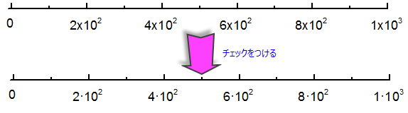

このタブの設定は、グラフの軸フォーマットオプションを制御します。
| 『数値スケール』コンボボックス |
軸ダイアログボックスの軸目盛ラベルタブのデータ種類 のドロップダウンリストから数値が選択されている場合に、グラフウィンドウに表示される軸の主刻み数の最大数をこのコンボボックスで設定します。 軸ダイアログボックスのスケールタブの主刻みが選択されており、そのテキストボックス中の値が、ここの数値スケールの数よりも多い時は、最高6つの主刻みがグラフウィンドウに表示されます。 |
|---|---|
| 『テキスト/日付スケール』のコンボボックス |
軸ダイアログボックスにある軸目盛ラベルタブのデータ種類ドロップダウンリストで、データセットからのテキスト、時間、日付、月又は週日が選択されている場合に、グラフウィンドウに表示される軸の主刻み数の最大数をこのコンボボックスで設定します。 デフォルトの値は400です。 主目盛の数がテキスト/日付スケールで指定した値を超える場合、Originはグラフウィンドウ内に最大6つの主目盛を表示します。 (軸ダイアログのスケールタブで、主目盛のタイプが増分あるいはカウントに設定されているときに影響します) Note: 主目盛のタイプがデータセットのときは、この設定の代わりに @ATDM と @ATDSの設定が影響します。 |
| 『内側の目盛刻みまで』コンボボックス |
目盛ラベルと内側の目盛とのデフォルトの間隔を目盛の長さに対するパーセントで入力または選択します。 |
|---|---|
| 『外側の目盛刻みまで』コンボボックス |
目盛ラベルと外側の目盛とのデフォルトの間隔を目盛の長さに対するパーセントで入力または選択します。 |
| 『軸のタイトルまで』コンボボックス |
目盛ラベルと軸タイトルのとのデフォルトの間隔を刻みの長さに対するパーセントで入力するか、選択するかします。 |
常に軸スケールのゼロポイントラベルを「0」として表示し、他のフォーマットオプションを上書きします（例：小数桁数 = 2）。
システム変数@TLCでこのオプションを制御できます。
常に軸の目盛りラベルから後続のゼロを削除し、他のフォーマットオプションを上書きします（例：小数桁数 = 2）。
システム変数@TLCでこのオプションを制御できます。
目盛ラベルの表示項目が科学的:10^3のときに、このチェックボックスにチェックを入れて、1と10を10^nとして表示します。
目盛ラベルの表示項目が指数:10^3のときに、このチェックボックスにチェックをつけて、 1×10^3,1 × 10^3, 1x10^3, 1·10^3のいずれかに表示させるかを指定します。
| Note:Origin 2021より前のバージョンでは、指数：10^3表記で、1×10^3を1·10^3で表示チェックボックスでしか、指数表記（10 ^ 3）を1×10^3または1·10^3と表示させることができませんでした。  |
このドロップダウンリストを使って、指数（1E3)の表示方法を、1E+03、 1E+3、1E3の3つから指定します。デフォルトの設定は、1E+03です。
|
Note: システム変数を使って、このドロップダウンリストの設定を変更することができます。
|
軸タイトルの単位表示を制御するには、（a）フライアウトメニューボタンからオプションを選択するか、（b）カスタム表記文字列を編集ボックスに直接入力します。カスタム文字列には文字テキストを含めることができます。
| メニューオプション | テキストボックス表示 | 軸タイトル表示例： |
|---|---|---|
| <自動> | <自動> | 値の言語バージョンとシステム変数@LUQおよび@LUQOの値によって異なります（Notesを参照してください）。 |
| <なし> | <なし> | |
| (<U>):(単位) | (<U>) | Displacement (mm) |
| [<U>]:[単位] | [<U>] | Displacement [mm] |
| {<U>}:{単位} | {<U>} | Displacement {mm} |
| /<U>:/単位 | /<U> | Displacement /mm |
| -<U>:-単位 | -<U> | Displacement -mm |
| in <U>:in 単位 | in <U> | Displacement in mm |
| %(CRLF)<U>:2行目に単位 | %(CRLF)<U> | Displacement mm |
|
Note:
|